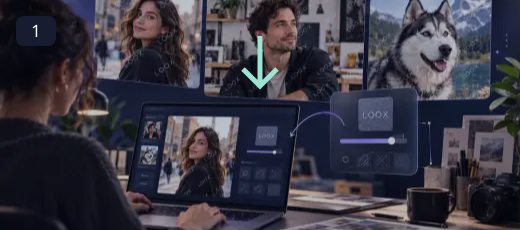
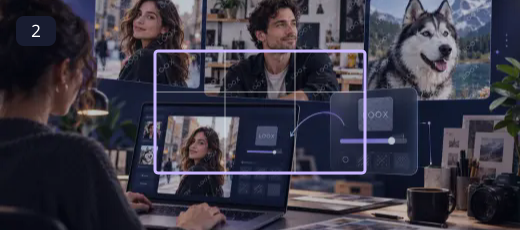
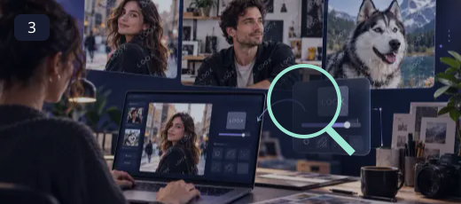
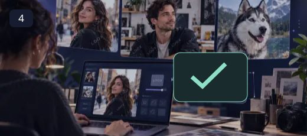

Image & Video Watermark
Add a visible ownership mark with repeating text or your own logo, then keep a separate image or video copy.
A good watermark makes ownership visible without taking over the picture. Use a short name, a readable position and an opacity that suits the background. A repeating pattern can make casual cropping less convenient, while a single corner mark keeps the composition quieter. Both are visual signals; neither prevents copying or proves legal ownership.
How to use Image & Video Watermark ↓How to use Image & Video Watermark

Choose an image or video
Open a supported local image or video. Your source is used for the preview and is not overwritten.

Choose text or upload a logo
Enter a short credit or upload a logo you own. Transparent PNG and WebP images make practical logo overlays.

Set opacity, angle, spacing and position
Use the live preview to adjust the mark. Turn off repeating mode to drag one mark into position.

Export a new image or MP4 video
Download PNG, JPEG or WebP for an image, or render a watermarked MP4 video. Keep the tab visible during recording.
A mark that belongs in the picture
Use a transparent PNG or WebP logo when you want clean edges, or choose text for a quick credit. Compare the mark over bright and dark parts of the media. For video, scrub or play the preview before exporting because a position that works in one frame can cover a face in another. Export is local and real-time; keep the tab visible until recording finishes.
- Use text or a transparent logo.
- Repeat the mark across the frame or place a single mark by dragging.
- Adjust opacity, size, angle and spacing.
- Keep the original file and export a separate image or video.
A visible watermark is a credit and deterrent, not copy protection. Choose a placement that does not cover faces, captions or essential details. Use only media and logos you own or have permission to process.
Questions, answered
Can I watermark a video as well as an image?
Yes. Supported videos are rendered with the chosen mark and exported as MP4 when the browser or local encoder can complete the operation.
Can I use a logo?
Yes. Upload a supported logo image. A transparent PNG or WebP usually blends best.
Why does video export take time?
The canvas records the video in real time, and a browser encoder or FFmpeg may then prepare MP4. Keep this tab visible; changing tabs cancels an active recording to avoid incomplete frames.
Does a watermark prevent copying?
No. It makes a visible credit or ownership claim part of the picture, but it cannot prevent copying or establish that the claim is legally valid.
Will this replace my original file?
The tools create a separate output. Keep the original until you have checked the exported file; the site does not provide cloud project backups.
Can I publish the result?
Use source media you own or have permission to edit. Check the destination’s requirements and the rights of anyone shown before publishing.